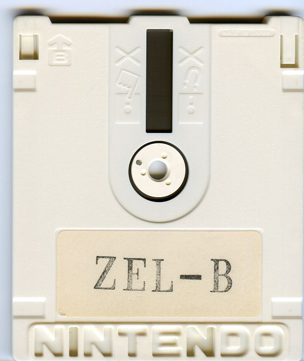

Lost Levels: The Legend of Zelda Prototype

Somehow these guys got their hands on an early prototype of The Legend of Zelda, and posted it for us all to play with our favorite emulator. Reportedly it's easier... but you can read about all the changes as well. Impressive find.
Previously: Make Magazine: Super Mario Bros Level Cake Next: Typewriter Ribbon Tin Collection - a set on Flickr